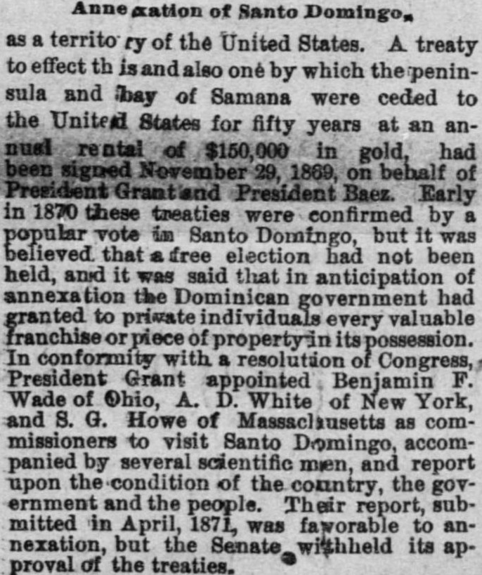
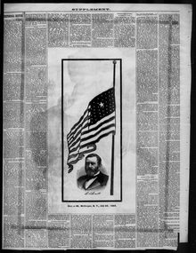

See the full pageVer la página completaJbariy in 1870 ttiese treaties were confirmed by a popular -voteA principios de 1870 estos tratados fueron confirmados por un voto popular
The Belmont Chronicle reviewed President Grant's 1869 treaties with Dominican President Báez for annexation and a fifty-year lease of Samaná Bay. Although a Dominican plebiscite and an American investigative commission composed of Benjamin Wade, Andrew D. White, and Samuel Gridley Howe supported the measure, concerns over questionable concessions and unfree elections led the United States Senate to reject the treaties.El Belmont Chronicle repasó los tratados celebrados en 1869 por el presidente Grant con el mandatario dominicano Báez para la anexión y el arrendamiento por cincuenta años de la bahía de Samaná. Si bien un plebiscito en suelo dominicano y una comisión investigadora estadounidense compuesta por Benjamin Wade, Andrew D. White y Samuel Gridley Howe refrendaron el convenio, los reparos sobre turbias concesiones y votaciones coaccionadas inclinaron al Senado de los Estados Unidos a rechazar los pactos.
FULL TEXT:TRADUCCIÓN:
Annexation of Santo Domingo, as a territory of the United States. A treaty to effect this and also one by which the peninsula and bay of Samana were ceded to the United States for fifty years at an annual rental of $150,000 in gold, had been signed November 29, 1869, on behalf of President Grant and President Baez. Early in 1870 these treaties were confirmed by a popular vote in Santo Domingo, but it was believed that a free election had not been held, and it was said that in anticipation of annexation the Dominican government had granted to private individuals every valuable franchise or piece of property in its possession. In conformity with a resolution of Congress, President Grant appointed Benjamin F. Wade of Ohio, A. D. White of New York, and S. G. Howe of Massachusetts as commissioners to visit Santo Domingo, accompanied by several scientific men, and report upon the condition of the country, the government and the people. Their report, submitted in April, 1871, was favorable to annexation, but the Senate withheld its approval of the treaties.Anexión de Santo Domingo, como territorio de los Estados Unidos. Un tratado para efectuar esto y también uno por el cual la península y la bahía de Samaná fueron cedidas a los Estados Unidos por cincuenta años a una renta anual de $150,000 en oro, habían sido firmados el 29 de noviembre de 1869, en nombre del presidente Grant y del presidente Báez. A principios de 1870 estos tratados fueron confirmados por un voto popular en Santo Domingo, pero se creyó que no se había celebrado una elección libre, y se dijo que en anticipación de la anexión el gobierno dominicano había concedido a individuos privados toda franquicia o propiedad valiosa en su posesión. En conformidad con una resolución del Congreso, el presidente Grant nombró a Benjamin F. Wade de Ohio, A. D. White de Nueva York, y S. G. Howe de Massachusetts como comisionados para visitar Santo Domingo, acompañados por varios hombres científicos, e informar sobre la condición del país, el gobierno y el pueblo. Su informe, presentado en abril de 1871, fue favorable a la anexión, pero el Senado retuvo su aprobación de los tratados.
Belmont Chronicle. St. Clairsville, Ohio, July 30, 1885.
See the original at the Library of CongressVer el original en la Biblioteca del Congreso
Published by: B.R. Cowen, 1855-1973.Publicado por: B.R. Cowen, 1855-1973.
Edition: Edition 1Edición: edición 1
Page: 6Página: 6
Frequency: weekly (1855–1973)Frecuencia: semanal (1855–1973)
Collection: Chronicling America, Library of CongressColección: Chronicling America, de la Biblioteca del Congreso
LCCN: sn85026241LCCN: sn85026241
ISSN: 2333-0112ISSN: 2333-0112
OCLC: 12114744OCLC: 12114744
Rights: public domain, according to the Library of CongressDerechos: dominio público, según la Biblioteca del Congreso